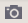
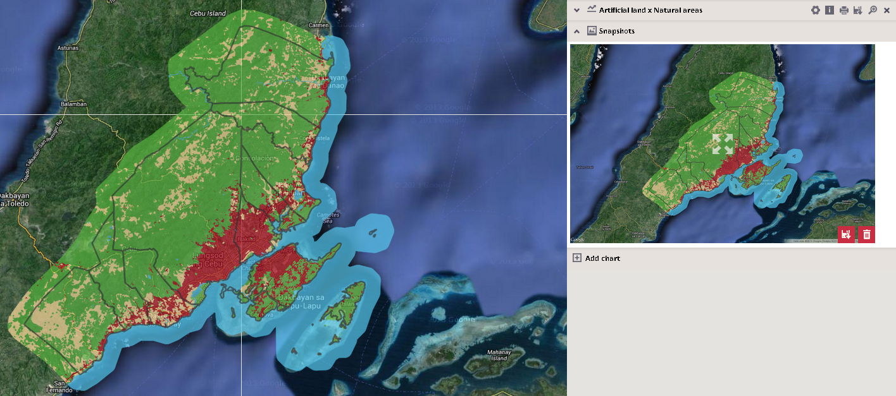
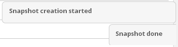
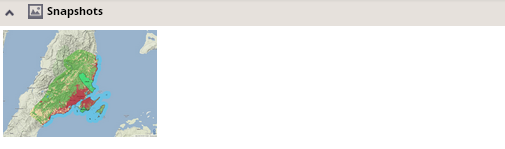
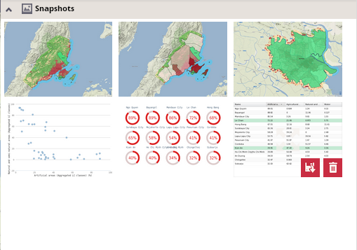

The application enables the user to create snapshots of any map layouts or charts including their temporary modifications.
Generation of snapshots can be initiated via clicking on the map snapshot tool or snapshot buttons located at the top of each chart: .

After performing that action, an alert indicating that the snapshot creation is in progress appears over the upper part of the chart panel. Another alert appears when the snapshot is done:

After a snapshot is created, the snapshot card appears at the top of the chart panel:
and created snapshots can be viewed after expanding the panel:

More snapshots of map layouts, charts or tables can be prepared, and they remain temporarily stored in the snapshot panel until the application is reloaded, even if the user switches the scope, location, theme or visualization.

A snapshot can be enlarged or minimized via a single click on it, or exported to PNG or deleted from the snapshot section using icons in the lower right corner of each snapshot. Note that only minimized snapshots can be deleted.